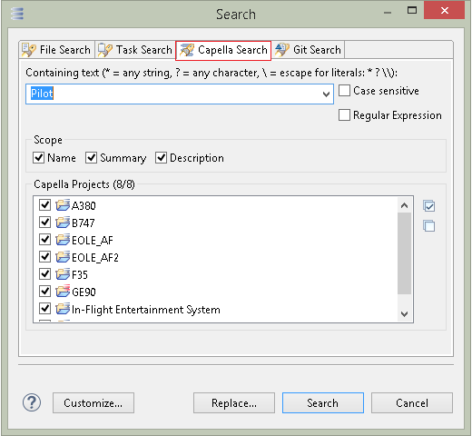
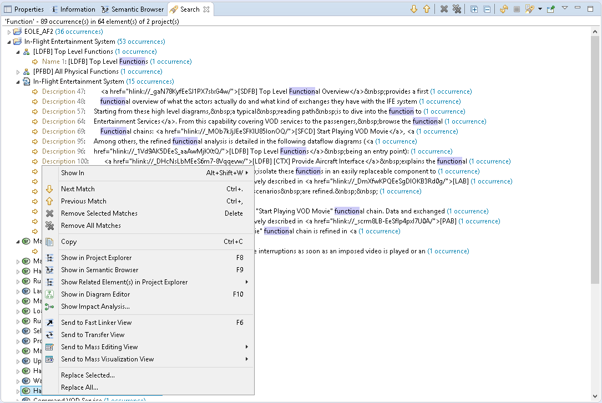
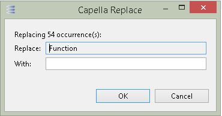

Search And Replace
- In the Capella perspective, click the
Search button in the workbench toolbar
- If it is not already selected, select the
Capella Search tab
-

- In the search page:
- A search can look into properties of semantic elements and representations:
Name,
Summary (not available for representations), and
Description.
- A search can look only into Capella projects with opening session.
- A search can be performed in two modes:
containing a text or
matching a regular expression (with content assist for finding a right regular expression)
- A search can be performed only if the validation is passed:
- At least one project selected
- At least one search field selected
- Search pattern is not empty and is a valid regular expression if the search mode is matching a regular expression.
- Results of search are shown in the
Search view
-

- Matched occurrences are grouped by project and element
- Matched occurrences are highlighted within the line containing it
- Matched occurrences can be filtered from the view by:
Capella Element,
Representation or
Not Modifiable
- Search results are stored in history and can be replayed
- Navigate to matched elements from
Search view to others Capella views and vice versa
- Perform replace on selected occurrences
- Replace can be performed from:
-
Replace button in the search dialog: All matched occurrences will be replaced
-
Replace all... and
Replace selected... menu items in the search result view: Only selected occurrences will be replaced
-
